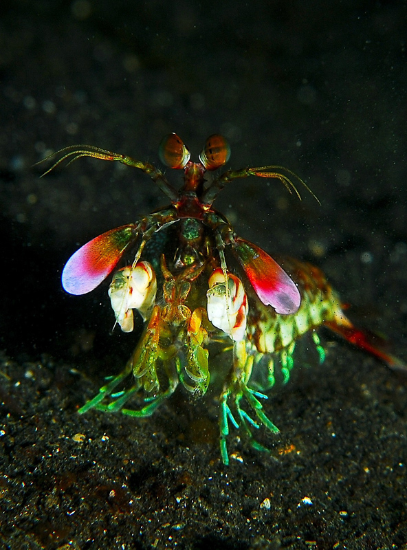

O camarão-louva-a-deus-palhaço (Odontodactylus scyllarus), também conhecido como lagosta-boxeadora é uma espécie de tamarutaca nativa do Indo-Pacífico,de Guam até a África Oriental.Em aquários de água salgada, é uma atração tanto pela coloração quanto pelo perigo. Os estomatópodes compõe uma ordem de crustáceos marinhos criptobentônicos que habitam águas tropicais e subtropicais. A principal característica destes animais é o segundo par de maxilípedes aumentados que são utilizados tanto como ferramenta quanto arma. No presente trabalho vinte espécies de estomatópodes do litoral nordestino brasileiro foram estudadas morfometricamente e foi feito um catálogo de espécies. Foram observados e descritos padrões estruturais característicos das famílias e espécies. Os tamanhos mínimos ou máximos de quatro das espécies estudadas foram ampliados: Pseudosquillisma oculata; Lysiosquilla scabricauda; Alachosquilla floridensis e Gibbesia neglecta. Foi possível, na maioria dos casos, distinguir diferentes táxons utilizando seis características morfométricas lineares através de análises discriminantes. Não foram encontradas diferenças morfométricas significativas entre machos e fêmeas nas espécies analisadas.
A força de um soco do camarão mantis é de 1500 newtons ou cerca de 152 quilos, enquanto o soco médio de um ser humano está na casa dos 3300 newtons ou 336 quilos. Ou seja, eles são muito menores que a gente, mas dão socos com a metade da nossa força.
